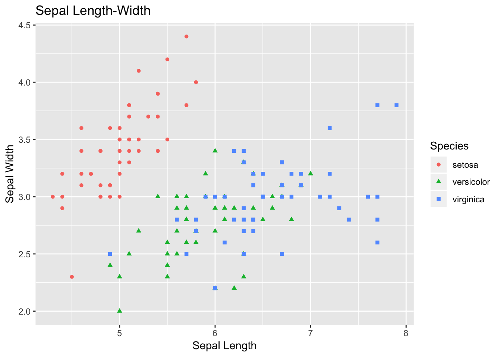
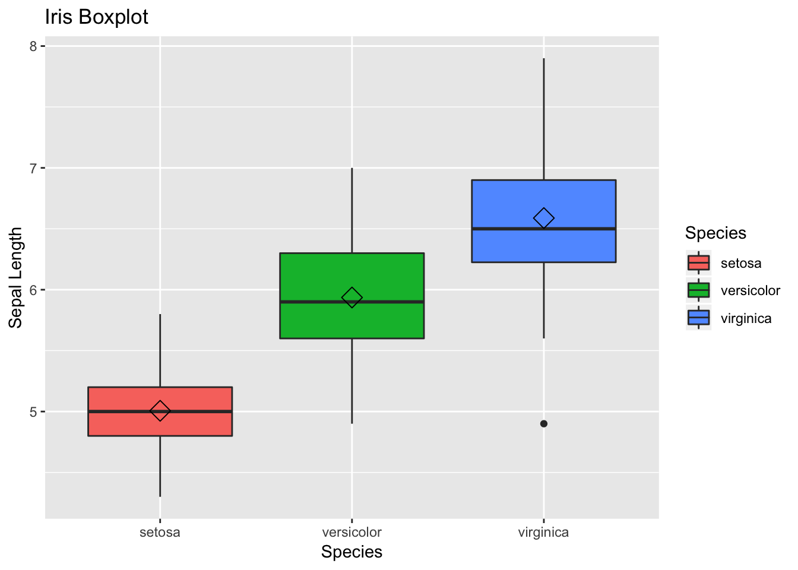
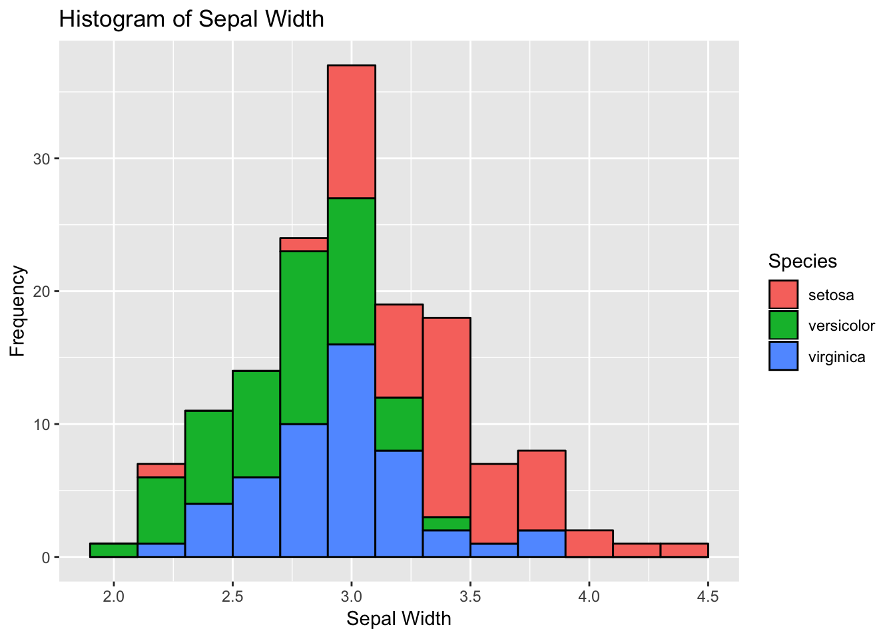
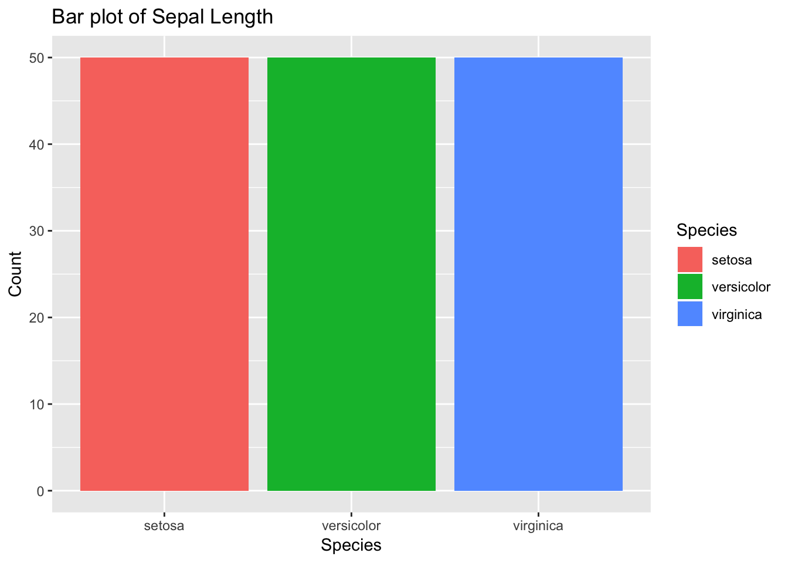
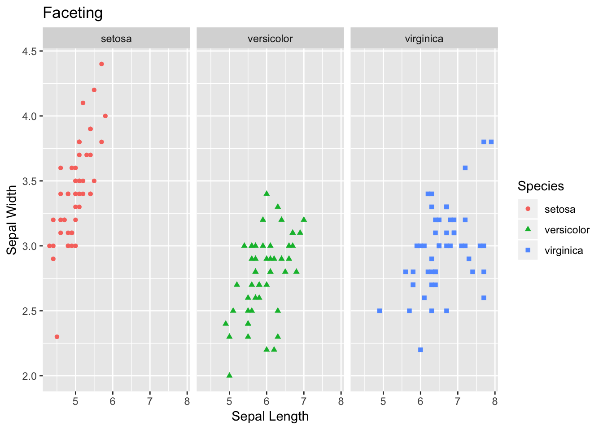

July 28, 2018
# load the library
library(tidyverse)## ── Attaching packages ────────────────────────────────── tidyverse 1.2.1 ──## ✔ ggplot2 3.0.0 ✔ purrr 0.2.4
## ✔ tibble 1.4.2 ✔ dplyr 0.7.4
## ✔ tidyr 0.8.0 ✔ stringr 1.2.0
## ✔ readr 1.1.1 ✔ forcats 0.3.0## ── Conflicts ───────────────────────────────────── tidyverse_conflicts() ──
## ✖ dplyr::filter() masks stats::filter()
## ✖ dplyr::lag() masks stats::lag()In this module we will be using Iris flower dataset to learn the tools for data wrangling by using dplyr package. Similarly, we will use Iris dataset for exploring some of the basic plots using ggplot2. Both of these packages are the part of tidyverse package. So, if you have tidyverse loaded in your machine then you are ready to go !!!!!
Iris data comes with the base R i.e., is build-in dataset. Let’s load the data first. You can do that by using data function and need to specify the name of dataset within parentheses- as shown below.
# load data
data(iris)
# provide you the first 6 rows of the data
head(iris)## Sepal.Length Sepal.Width Petal.Length Petal.Width Species
## 1 5.1 3.5 1.4 0.2 setosa
## 2 4.9 3.0 1.4 0.2 setosa
## 3 4.7 3.2 1.3 0.2 setosa
## 4 4.6 3.1 1.5 0.2 setosa
## 5 5.0 3.6 1.4 0.2 setosa
## 6 5.4 3.9 1.7 0.4 setosa# check the structure of data. Very handy function to get a basic information about the data.
str(iris)## 'data.frame': 150 obs. of 5 variables:
## $ Sepal.Length: num 5.1 4.9 4.7 4.6 5 5.4 4.6 5 4.4 4.9 ...
## $ Sepal.Width : num 3.5 3 3.2 3.1 3.6 3.9 3.4 3.4 2.9 3.1 ...
## $ Petal.Length: num 1.4 1.4 1.3 1.5 1.4 1.7 1.4 1.5 1.4 1.5 ...
## $ Petal.Width : num 0.2 0.2 0.2 0.2 0.2 0.4 0.3 0.2 0.2 0.1 ...
## $ Species : Factor w/ 3 levels "setosa","versicolor",..: 1 1 1 1 1 1 1 1 1 1 ...If you have used other programming language before, then I bet you have heard about data frame. In tidyverse world data frame or table is called tibble. You can conceptualize it as table with some extra information on the data type.
# create tibble format table
df <- tbl_df(iris)
df## # A tibble: 150 x 5
## Sepal.Length Sepal.Width Petal.Length Petal.Width Species
## <dbl> <dbl> <dbl> <dbl> <fct>
## 1 5.10 3.50 1.40 0.200 setosa
## 2 4.90 3.00 1.40 0.200 setosa
## 3 4.70 3.20 1.30 0.200 setosa
## 4 4.60 3.10 1.50 0.200 setosa
## 5 5.00 3.60 1.40 0.200 setosa
## 6 5.40 3.90 1.70 0.400 setosa
## 7 4.60 3.40 1.40 0.300 setosa
## 8 5.00 3.40 1.50 0.200 setosa
## 9 4.40 2.90 1.40 0.200 setosa
## 10 4.90 3.10 1.50 0.100 setosa
## # ... with 140 more rowsIf you check at the header of tibble, then you can see it contains information on the class of data contained within the column. For example, information in the Species column of Iris data is factor.
Now lets dive into dplr little more, and work on data wrangling part. Data cleaning or organizing is extremely essential for downstream analysis. Most of the data analyst spend most of their time in data cleaning, although, most of us hate to spend time on cleaning the messy data. Luckily, dplyr has quite intuitive functions to help you..
Let say if you want to filter the Iris dataset, where Species are versicolor. Then you can use a function filter.
# Filter rows with filter()
# here df is the object where we had store our tibble data
# yes, you need to use ==
filter(df, Species == "versicolor")## # A tibble: 50 x 5
## Sepal.Length Sepal.Width Petal.Length Petal.Width Species
## <dbl> <dbl> <dbl> <dbl> <fct>
## 1 7.00 3.20 4.70 1.40 versicolor
## 2 6.40 3.20 4.50 1.50 versicolor
## 3 6.90 3.10 4.90 1.50 versicolor
## 4 5.50 2.30 4.00 1.30 versicolor
## 5 6.50 2.80 4.60 1.50 versicolor
## 6 5.70 2.80 4.50 1.30 versicolor
## 7 6.30 3.30 4.70 1.60 versicolor
## 8 4.90 2.40 3.30 1.00 versicolor
## 9 6.60 2.90 4.60 1.30 versicolor
## 10 5.20 2.70 3.90 1.40 versicolor
## # ... with 40 more rowsYou can also filter dataset passing some conditional requirements. Here, let’s say, we want to select all flower data with petal length is greater than 2.
# Comparisons
filter(df, Petal.Length > 2)## # A tibble: 100 x 5
## Sepal.Length Sepal.Width Petal.Length Petal.Width Species
## <dbl> <dbl> <dbl> <dbl> <fct>
## 1 7.00 3.20 4.70 1.40 versicolor
## 2 6.40 3.20 4.50 1.50 versicolor
## 3 6.90 3.10 4.90 1.50 versicolor
## 4 5.50 2.30 4.00 1.30 versicolor
## 5 6.50 2.80 4.60 1.50 versicolor
## 6 5.70 2.80 4.50 1.30 versicolor
## 7 6.30 3.30 4.70 1.60 versicolor
## 8 4.90 2.40 3.30 1.00 versicolor
## 9 6.60 2.90 4.60 1.30 versicolor
## 10 5.20 2.70 3.90 1.40 versicolor
## # ... with 90 more rowsSince you have used one condition, why not multiple?
# Logical operators
filter(df, Petal.Length > 6 & Sepal.Length > 7)## # A tibble: 9 x 5
## Sepal.Length Sepal.Width Petal.Length Petal.Width Species
## <dbl> <dbl> <dbl> <dbl> <fct>
## 1 7.60 3.00 6.60 2.10 virginica
## 2 7.30 2.90 6.30 1.80 virginica
## 3 7.20 3.60 6.10 2.50 virginica
## 4 7.70 3.80 6.70 2.20 virginica
## 5 7.70 2.60 6.90 2.30 virginica
## 6 7.70 2.80 6.70 2.00 virginica
## 7 7.40 2.80 6.10 1.90 virginica
## 8 7.90 3.80 6.40 2.00 virginica
## 9 7.70 3.00 6.10 2.30 virginicaDataset is filtered based on both the criteria, and only the entries that matched the set conditions are displayed.
Now, rather than filtering data with the desired criteria, we can also arrange them in our desired order- by using arrange function.
# arrange by sepal length then petal width. Default is ascending order.
arrange(df, Sepal.Length, Petal.Width)## # A tibble: 150 x 5
## Sepal.Length Sepal.Width Petal.Length Petal.Width Species
## <dbl> <dbl> <dbl> <dbl> <fct>
## 1 4.30 3.00 1.10 0.100 setosa
## 2 4.40 2.90 1.40 0.200 setosa
## 3 4.40 3.00 1.30 0.200 setosa
## 4 4.40 3.20 1.30 0.200 setosa
## 5 4.50 2.30 1.30 0.300 setosa
## 6 4.60 3.10 1.50 0.200 setosa
## 7 4.60 3.60 1.00 0.200 setosa
## 8 4.60 3.20 1.40 0.200 setosa
## 9 4.60 3.40 1.40 0.300 setosa
## 10 4.70 3.20 1.30 0.200 setosa
## # ... with 140 more rows# allows to arrange in descending order.
arrange(df, desc(Sepal.Length))## # A tibble: 150 x 5
## Sepal.Length Sepal.Width Petal.Length Petal.Width Species
## <dbl> <dbl> <dbl> <dbl> <fct>
## 1 7.90 3.80 6.40 2.00 virginica
## 2 7.70 3.80 6.70 2.20 virginica
## 3 7.70 2.60 6.90 2.30 virginica
## 4 7.70 2.80 6.70 2.00 virginica
## 5 7.70 3.00 6.10 2.30 virginica
## 6 7.60 3.00 6.60 2.10 virginica
## 7 7.40 2.80 6.10 1.90 virginica
## 8 7.30 2.90 6.30 1.80 virginica
## 9 7.20 3.60 6.10 2.50 virginica
## 10 7.20 3.20 6.00 1.80 virginica
## # ... with 140 more rowsUnlike filter, if you want to take a subset of data, and study them separately then you can use select function to get a subset of the bigger data.
# from iris data, lets select only three columns - Species, Petal width and Petal length
select(df, Species, Petal.Width, Petal.Length)## # A tibble: 150 x 3
## Species Petal.Width Petal.Length
## <fct> <dbl> <dbl>
## 1 setosa 0.200 1.40
## 2 setosa 0.200 1.40
## 3 setosa 0.200 1.30
## 4 setosa 0.200 1.50
## 5 setosa 0.200 1.40
## 6 setosa 0.400 1.70
## 7 setosa 0.300 1.40
## 8 setosa 0.200 1.50
## 9 setosa 0.200 1.40
## 10 setosa 0.100 1.50
## # ... with 140 more rowsR is quiet flexible in handling data set. You can not only twist and turn the entries, but also add additional columns and rows. You can use mutate function to do that. Here log.Sepal.length is a name of the new column, and in this column we will be storing the log(Sepal.Length) values.
mutate(df, log.Sepal.length = log(Sepal.Length))## # A tibble: 150 x 6
## Sepal.Length Sepal.Width Petal.Length Petal.Width Species
## <dbl> <dbl> <dbl> <dbl> <fct>
## 1 5.10 3.50 1.40 0.200 setosa
## 2 4.90 3.00 1.40 0.200 setosa
## 3 4.70 3.20 1.30 0.200 setosa
## 4 4.60 3.10 1.50 0.200 setosa
## 5 5.00 3.60 1.40 0.200 setosa
## 6 5.40 3.90 1.70 0.400 setosa
## 7 4.60 3.40 1.40 0.300 setosa
## 8 5.00 3.40 1.50 0.200 setosa
## 9 4.40 2.90 1.40 0.200 setosa
## 10 4.90 3.10 1.50 0.100 setosa
## # ... with 140 more rows, and 1 more variable: log.Sepal.length <dbl>Other important function in dplyr is summarise. This function allows you get the summary information about the data. In the example below, we first group entries by flower species, then calculate mean petal length for each species of flower.
# find mean of peteal length
summarise(df, mean(Petal.Length))## # A tibble: 1 x 1
## `mean(Petal.Length)`
## <dbl>
## 1 3.76# find mean of petal length for each species
group_by(df, Species) %>% count(n())## # A tibble: 3 x 3
## # Groups: Species [3]
## Species `n()` n
## <fct> <int> <int>
## 1 setosa 50 50
## 2 versicolor 50 50
## 3 virginica 50 50df %>%
group_by(Species) %>%
summarise(mean(Petal.Length))## # A tibble: 3 x 2
## Species `mean(Petal.Length)`
## <fct> <dbl>
## 1 setosa 1.46
## 2 versicolor 4.26
## 3 virginica 5.55Did you notice %>% symbol? What is that? This symbol is called pipe. Yes… pipe because as name imply, it takes in output from one operation then pass/pipe it as an input for next operation. Advantage: No need to create new object to store values at each operation.
Now you know how to organize or clean data, which mean you have become a “Data Scientist”. Data science will be incomplete without good visualization tools. So, now we will explore some of the very basic plots using ggplot2 package. It’s fun to see figures then tibble.
Since you know so much about Iris flower data, we will use the same one for learning visualizations. However, you can use the same concepts while analyzing your own data.
Let’s see the figure first!!!
#1 Scatter PLot
ggplot(data=df, aes(x = Sepal.Length, y = Sepal.Width))+
geom_point(aes(color=Species, shape=Species)) +
xlab("Sepal Length") +
ylab("Sepal Width") +
ggtitle("Sepal Length-Width")
The plot that you just plotted is called scatter plot. Let’s follow the code briefly. If you understand this code, then the rest of code for visualization is based on similar concept.
Here, in data you are specifying df, which is our tibble format Iris data. Then, with aes we are specifying what we want in X- and Y-axes. Sepal length is used as X-axis, and Sepal width as Y-axis.
So far, we have informed R the backbone of our plot.
geom is used to specify what kind of plot that we want. For scatter plot we want geom_point. If we want bar plot, then geom_bar, and there are many other options.
With-in geom_point we are adding more information for the points. We want each point to be colored and shaped according to the flower species.
+ is used to add each layer of information.
The other handy plot is box plot- can be used to look the spread of data. For the code part, the logic is same as of scatter plot, but this time we need to use geom_boxplot.
Additionally, we can use + sign and add some summary statistics within the plot. Here, we want to display mean for each flower species within the boxplot. You can modify the shape and size parameters.
# 2) Box Plot
box <- ggplot(data=df, aes(x=Species, y=Sepal.Length))
box +
geom_boxplot(aes(fill=Species)) +
ylab("Sepal Length") +
ggtitle("Iris Boxplot") +
stat_summary(fun.y=mean, geom="point", shape=5, size=4)
Histograms allow to look the data distribution. Histograms are commonly used in exploratory analysis. You can also modify the bin size and check for irregular trends (outliers) in the data - on your own.
Note- we need to change geom type— here we use geom_histogram
# 3) Histogram
histogram <- ggplot(data=df, aes(x=Sepal.Width))
histogram +
geom_histogram(binwidth=0.2, color="black", aes(fill=Species)) +
xlab("Sepal Width") +
ylab("Frequency") +
ggtitle("Histogram of Sepal Width")
Barplot– we don;t even have to mention about it. You have seen it, and use it. Let’s plot in ggplot2. Again, we need to specify geom type- as geom_bar
# 4) bar plot
bar <- ggplot(data=df, aes(x=Species))
bar +
geom_bar(aes(fill=Species)) + xlab("Species") +
ylab("Count") +
ggtitle("Bar plot of Sepal Length") 
Additionally, another interesting and handy plotting tool is facet. Facet allows to get a separate panel for each category. As you can see in the plot below, we get three panels - one for each species of flower.
# 5) Faceting
facet <- ggplot(data=df, aes(Sepal.Length, y=Sepal.Width, color=Species)) +
geom_point(aes(shape=Species), size=1.5) +
xlab("Sepal Length") +
ylab("Sepal Width") +
ggtitle("Faceting") # Along columns
facet + facet_grid(. ~ Species)